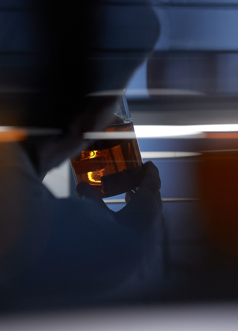
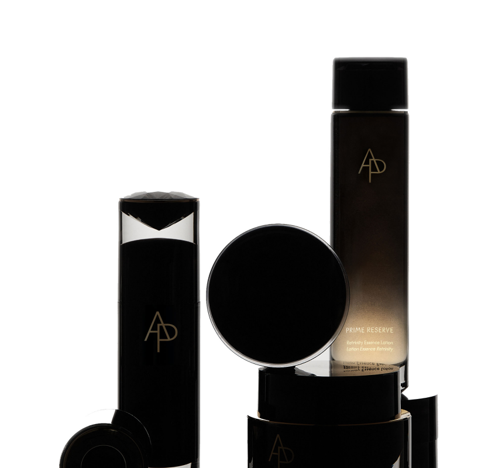

A B S O L U T E P E R F O R M A N C E
A
B
S
O
L
U
T
E
P
E
R
F
O
R
M
A
N
C
E
by AMOREPACIFIC
逾越天赋之美
AP力求打破传统化妆品行业抗衰理念与美肤思路，焕启肌肤能量，塑造内外同新的肌肤，以超越自然天赋之美。
专家访谈
Brian Byung - Fhy Suh
AP研究所 | 首席研究官
영상에 대한 설명과 자막
-
科
技
·
成
就
肌
肤
底
气
以前沿科技与突破性功效为核心，
致力于提供创新型护肤方案，提升护肤效率。
영상에 대한 설명과 자막
-
领
先
科
创
创新成分
历经17年，研究10,000余种珍稀植物，22.8万次实验，自主研发出独家抗老¹成分钻石植萃228K。
1. 指产品通过抗皱、紧致、修护等功效帮助改善肌肤老化痕迹

临床实证
经严格临床测试验证的高效护肤配方与护肤效果。
前沿科技
基于集团70余年皮肤研究资产，联合世界各地科研机构，融汇皮肤科学与生物工程学前沿技术，汲取表观遗传学灵感，提供创新型护肤方案。

尊效修护系列
呈现高效而持久的抗老水准
搭载AP独家且无法复制的复合型抗老成分钻石植萃228K
通过3阶逆龄法则：修护-逆龄²-续能，高效且持久地延缓衰老
2. 指逆转肌肤年龄，产品通过抗皱、紧致、修护等功效帮助改善肌肤老化痕迹